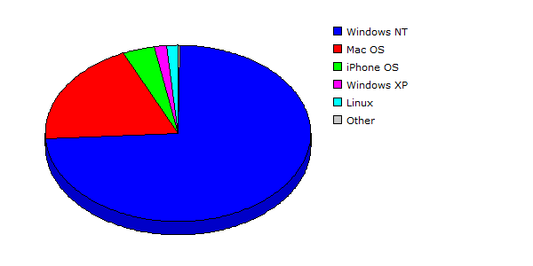

| Rank |
Operating System |
Hits |
Visitors |
| 1 |
Windows NT |
17765 |
83.59% |
1256 |
73.62% |
| 2 |
Mac OS |
2990 |
14.07% |
329 |
19.28% |
| 3 |
iPhone OS |
186 |
00.88% |
66 |
03.87% |
| 4 |
Windows XP |
92 |
00.43% |
26 |
01.52% |
| 5 |
Linux |
151 |
00.71% |
24 |
01.41% |
| 6 |
Windows Vista or Windows Server 2008 |
23 |
00.11% |
2 |
00.12% |
| 7 |
Windows Server 2003 |
44 |
00.21% |
2 |
00.12% |
| 8 |
Windows |
1 |
00.00% |
1 |
00.06% |
| |
Total |
21252 |
1706 |
|
Description: This report contains statistics about the operating systems that your visitors use.
|
|